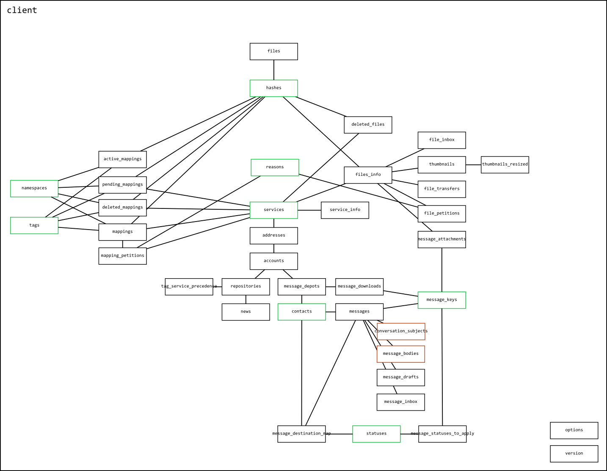
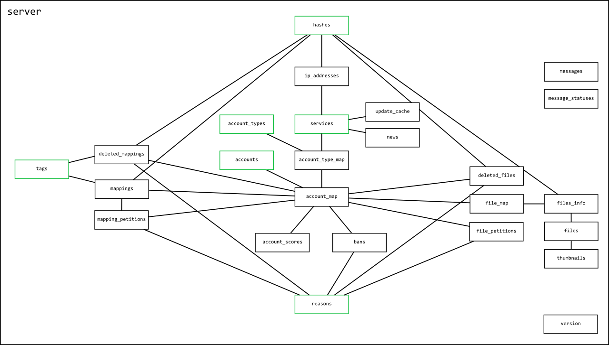

database diagrams
I have included SQLite Studio with the releases so you can better understand, if you are so interested, how the programs work. You can drag a .db file straight onto the exe and it will open up for browsing.
Here are current diagrams for the databases. They are not strict UML, just a general guide. I refer to them while coding, so I thought I might as well include them here.

